Other Old Nintendo Consoles
The Color TV-Game series
(1977-1980)
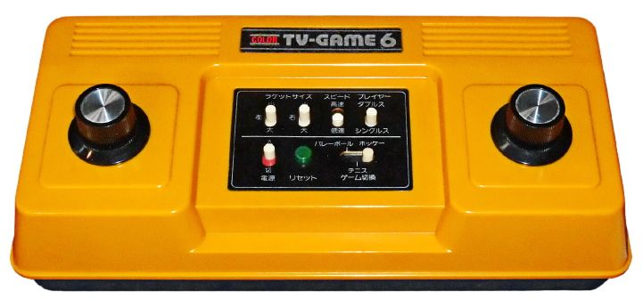
The Color TV-Game series includes five different pieces of hardware, each one with a unique game. Color TV-Game systems did not have interchangeable cartridges, so each console could only play a single title.
Nintendo Entertainment System/Famicom
(1985)
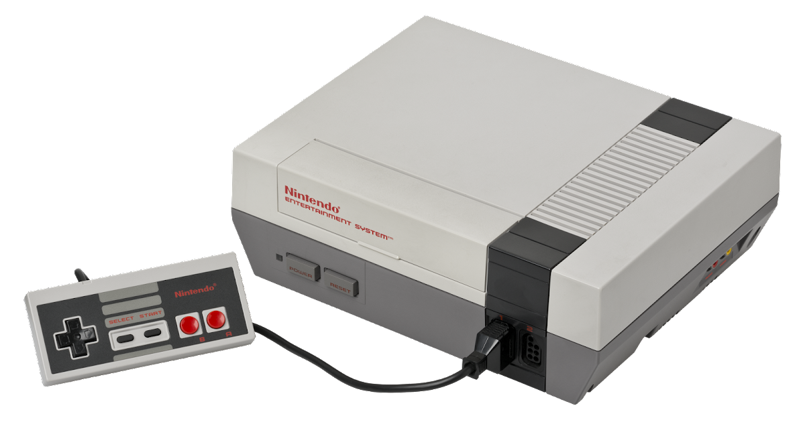
The Nintendo Entertainment System, an 8-bit system, was one of Nintendo's greatest successes. It sold around 61 Million units. Unlike the Color TV Games, the NES is a full console and could play different titles, on interchangeable cartridges, that could be purchased in stores. A redesign was made in 1993 called AV Famicom in Japan and New-Style NES in other regions such as America.
Super Nintendo Entertainment System/Super Famicom
(1991)
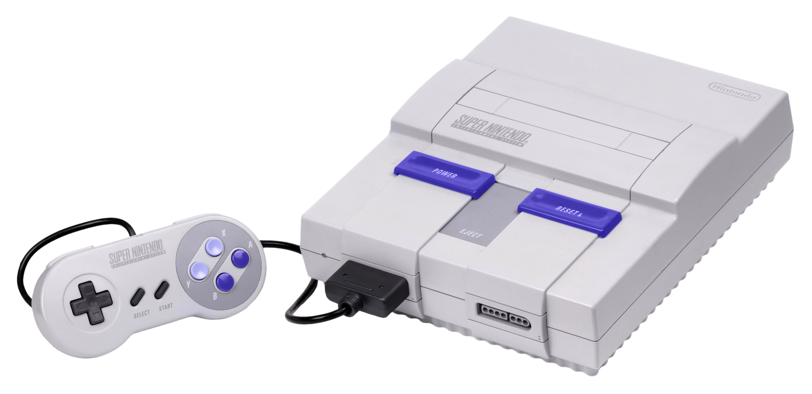
The Super Nintendo Entertainment System featured much enhanced graphics, a brand new controller, and more. It was the 16-bit console by Nintendo. Though it sold well, (around 49 million units) the Sega Genesis was a major competitor to the SNES, with both Nintendo and Sega giving an extensive ad campaign calling out both sides. Like the NES, it had a redesign late in its life, this time being the Super Famicom Jr. in Japan and New-Style SNES in other regions.
Nintendo 64
(1996)

The Nintendo 64 featured greatly improved graphics, now 3D, and a new controller that introduced the modern joystick. It was also the first home console to have four controller ports built into the system. It sold around 32 million units. With its lack of a disc format, the lack of strong third-party support, and it being released after its competitors' consoles, it could not sell as well as the PlayStation.
Nintendo GameCube
(2001)
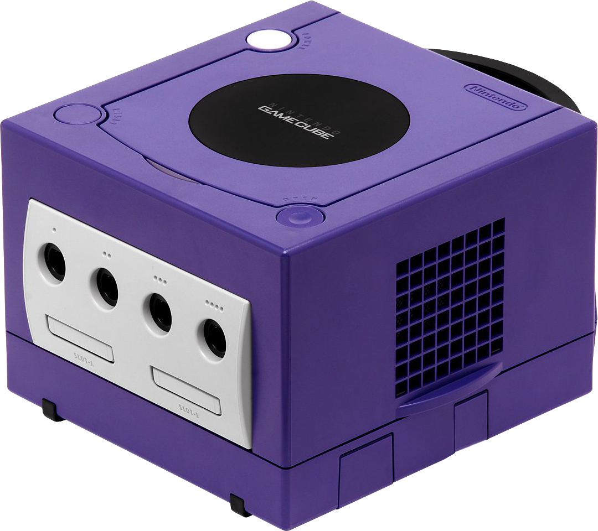
The GameCube featured enhanced graphics and a new controller. As the games came on mini-disc it was the first Nintendo home console to solely use a disc format for games. It was also the first (and only) Nintendo system to require additional memory cards in order to save progress. Though not Nintendo's worst selling home console, it sold around 22 million units, being no match for the PlayStation 2, which was very popular, even to this day, being the best selling console overall.
Wii
(2006)
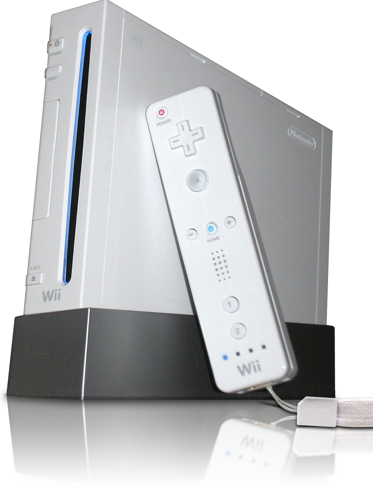
The Wii, also called the (RVL-001) featured motion controls, a new online system, various multimedia 'channels' and slightly improved graphics. The graphical change wasn't nearly as dramatic as previous console transitions. It fully supports GameCube games and controllers, making it the first Nintendo home console to be backwards compatible. Its main selling point was its motion controls. This made the casual audience lean towards buying it. It sold 101 million units making its Nintendo's best-selling home console, up until the Nintendo Switch surpassed it in 2021.
Wii U
(2012-2017)
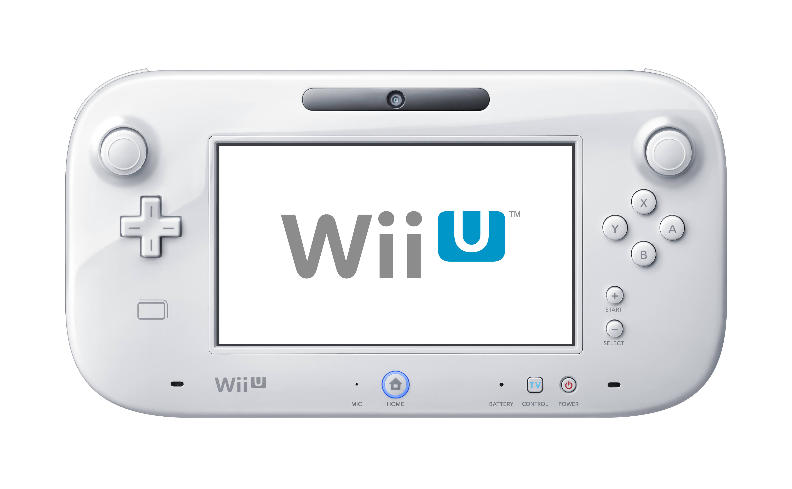
The Wii U features a new controller known as the Wii U GamePad, which has a 6.2" touch screen built into it. It also boasts new 1080p HD graphics (only on the TV screen). It was released in two models: white (8GB) and black (32GB). It has a NFC chip used to scan in amiibo. It fully supports Wii games and controllers. With bad marketing, and no one wanting the gimmick, which was the gamepad, it sold very poorly. It has sold around 13 million units making it Nintendo's worst-selling home console. (2012 - 2017)
Game & Watch
(1980-1991)
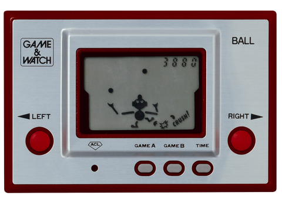
Small, portable LCD games starring who is known today as Mr. Game and Watch. There have been 60 different variations of the Game & Watch system.
Game Boy
(1989)
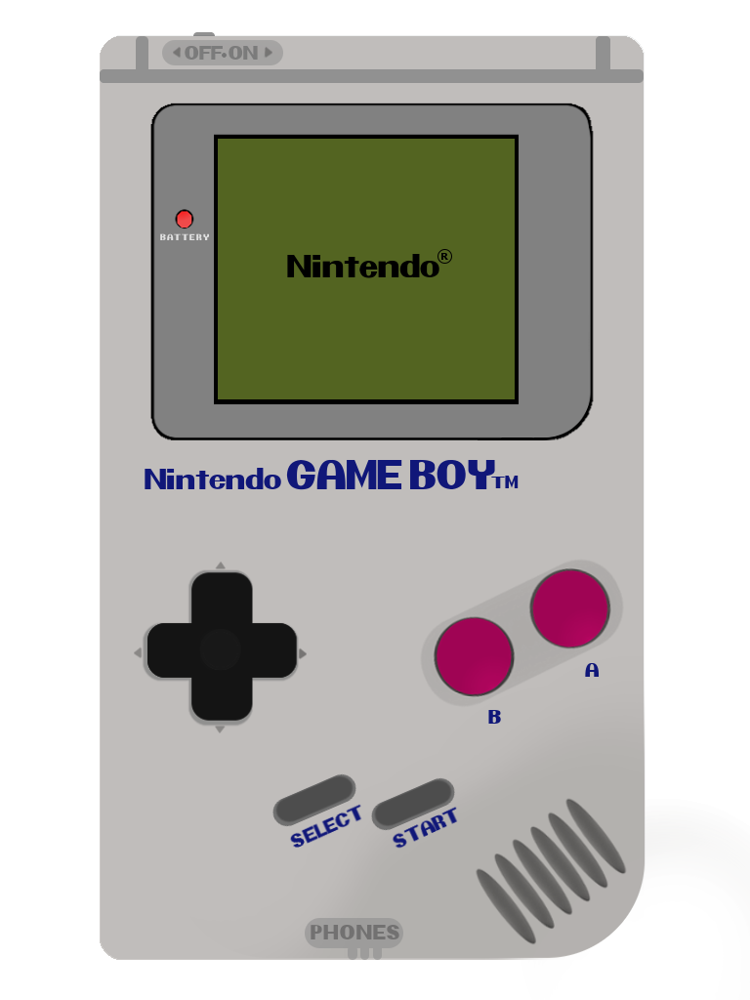
The Game Boy was the first portable, interchangeable cartridge handheld by Nintendo. Games were 8-bit, black-and-white, played on a green-tinted screen. The system had a red LED which showed the remaining power. It could last for over 15 hours on its required 4 AA batteries.
Virtual Boy
(1995)
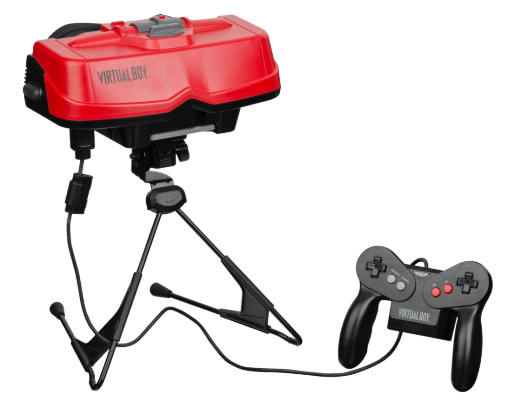
The first Nintendo console with 3D graphics, the concept was to create a virtual reality experience. The system featured a pair of goggles to look into which sent a slightly different image to each eye, creating the 3D effect. The graphics could only be displayed in red and black. The system reportedly caused headaches and nausea, leading to low sales. It was discontinued less than a year after it was released.
Game Boy Advance
(2001)
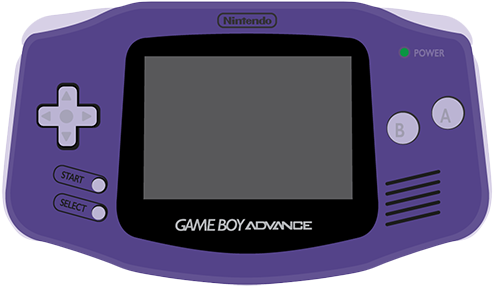
The Game Boy Advance was a major improvement over the Game Boy Color with a new handheld shape, shoulder buttons and better graphics. It was technically compared to the Super Nintendo console, except that the Game Boy Advance's 16-bit sound is not as powerful as the console's. Some games remade from the Super Nintendo for the Game Boy Advance had to remix their soundtracks so they would work on the handheld system. This is clearly evident in the Donkey Kong Country series. It was also backwards compatible Game Boy and Game Boy Color games, making it the first Nintendo handheld to be backwards compatible with more than one console.
Game Boy Advance SP
(2003)
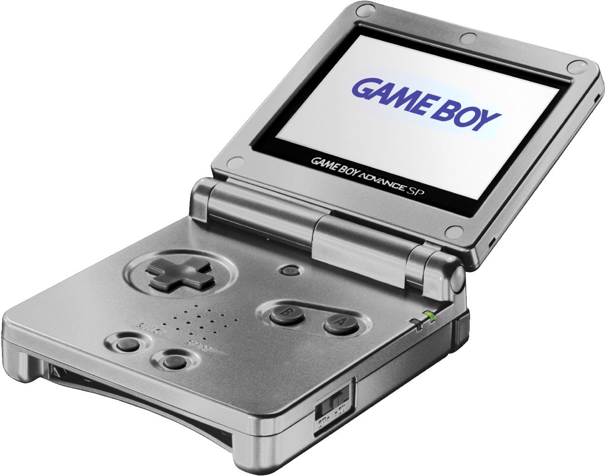
The Game Boy Advance SP was the first Game Boy to have a clamshell design much like the Nintendo DS. Unlike the DS, the device does not enter a "sleep mode" when being shut. The Game Boy Advance SP featured much better graphics and a front-lit screen which could be turned on or off (the model AGS-001). The newer model, AGS-101 features a backlit screen with adjustable brightness. The system's game compatibility is identical to the Game Boy Advance's. Backwards compatibility with the Game Boy and Game Boy Color continued with the SP.
Nintendo DS
(2004)

The Nintendo DS featured two screens, the bottom one being a touch screen. The system also had enhanced graphics. It featured backwards compatibility with Game Boy Advance games (except it doesn't have multiplayer), but not original Game Boy and Game Boy Color, and was often criticized for its chunky design. Often referred to as the 'DS Phat' by fans. The DS sold 154 million, making it the second best-selling console behind the PlayStation 2.
Nintendo 3DS
(2011)
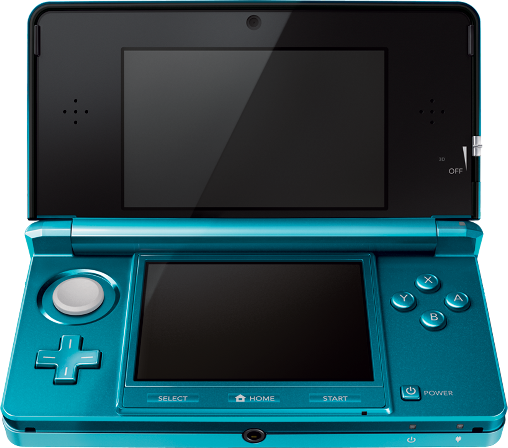
The successor to the Nintendo DS family, the first console in the DS line to have the top screen in widescreen format. the Nintendo 3DS can produce 3D graphics on the top screen without the need for glasses and is backwards compatible with most DS and DSi games. It also includes a portable Mii Maker and StreetPass. It was also the first Nintendo handheld to feature a joystick.
New Nintendo 3DS
(2014)
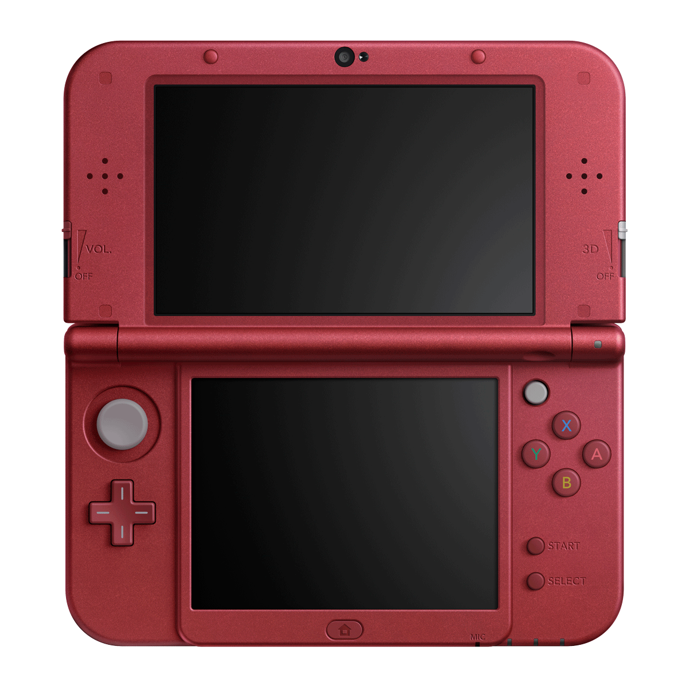
The New Nintendo 3DS is a revision of the original Nintendo 3DS, with new features like amiibo and the Face Plates and games exclusive ges via the 'Only for New Nintendo 3DS' line of games, which could be played on every 3ds with the prefix 'new', Including the New Nintendo 2DS XL, the console also played Virtual Console of Super Nintendo Entertainment System which are incompatible with any of the older models. The console also has a 3D screen which can be viewed in different angles and two new buttons and an additional control nub.